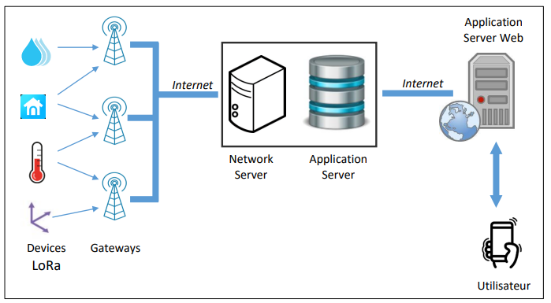
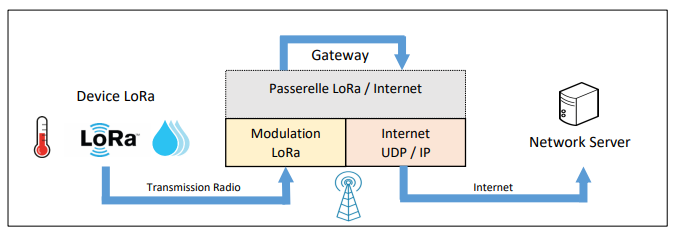
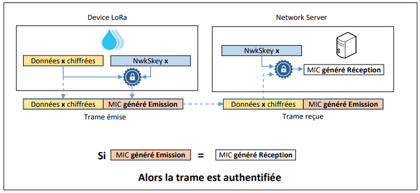
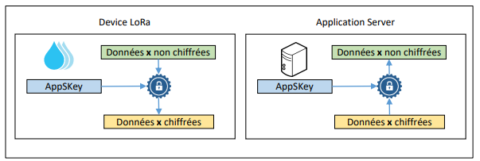
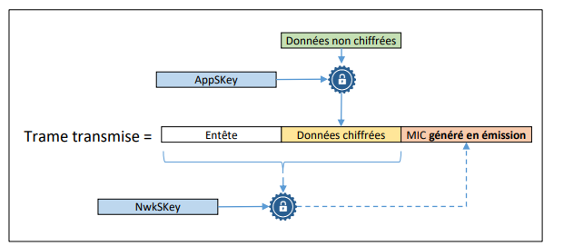
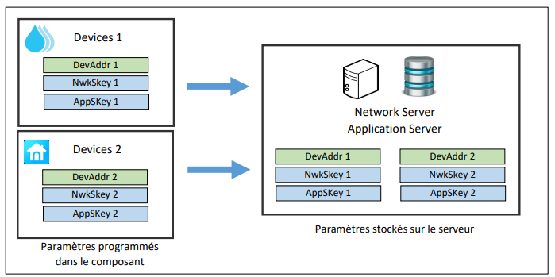
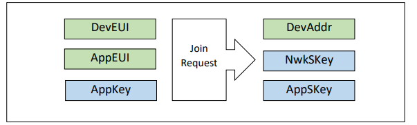
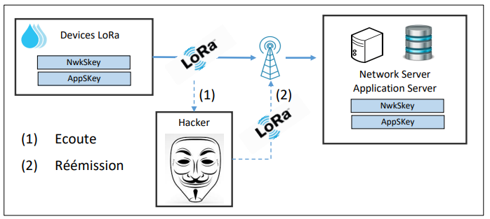

BTS CIEL • Option B : Électronique et Réseaux • Enseignement Professionnel STI
Synthèse Visuelle : Réseaux LoRa & LoRaWAN pour l'IoT
Architecture Réseau, Sécurité Cryptographique (AES-128, OTAA, Anti-Rejeu) & Critères de Choix Bureau d'Études
Bande Libre 868 MHz (LPWAN)Architecture Étoile d'ÉtoilesDouble Sécurité AES-128Approche BE sans calcul
1. Structure d'un Réseau LoRaWAN (Étoile d'Étoiles)
Ne pas confondre LoRa et LoRaWAN
LoRa (Long Range) désigne uniquement la modulation radio (couche physique) en bande libre 868 MHz en Europe, conçue pour les objets connectés (LPWAN : grande portée, faible débit, très faible consommation). LoRaWAN désigne le protocole réseau complet qui relie les capteurs aux serveurs applicatifs via Internet.

Figure 1 : Chaîne de communication complète d'un réseau LoRaWAN, des capteurs (Devices) jusqu'à l'utilisateur final.
1. Devices LoRa (Capteurs IoT)Radio LoRa
Profil IoT : Faible consommation (pile/batterie), faible coût, petite taille et puissance de calcul réduite.
Diffusion sans cible : Un capteur ne s'adresse pas à une Gateway précise — toutes les Gateways à portée captent sa trame.
Flux principal : Majoritairement Uplink (capteur → serveur), mais Downlink possible (commandes).
2. Gateways (Passerelles)RF ↔ UDP/IP
Écoute simultanée : Reçoit sur 8 canaux et sur 6 Spreading Factors (SF7 à SF12) = 48 combinaisons en parallèle.
Passerelle transparente : Encapsule la trame radio (payload en Base64 + métadonnées RSSI, SNR, SF, fréquence) en texte JSON sur UDP/IP (port 1700).
Identité : Chaque Gateway possède un identifiant unique EUI sur 64 bits.
3. Network Server (Cœur Réseau)Routage & MIC
Dédoublonnage : Plusieurs Gateways peuvent relayer la même trame ; le Network Server ne conserve qu'un seul exemplaire.
Authentification : Vérifie l'intégrité et l'origine de la trame grâce à la clé NwkSKey (sans pouvoir lire la mesure !).
Pilotage : Sélectionne la meilleure Gateway pour le Downlink et optimise le débit radio (ADR).
4. Application Server & App WebDéchiffrement
Isolation : Sépare les flottes de capteurs par application métier.
Déchiffrement : Décode les données utiles (Frame Payload) grâce à la clé AppSKey.
Restitution utilisateur : Transfère les données vers votre application (Node-RED, base de données, serveur Web) en HTTP POST ou MQTT.

Figure 2 : La Gateway assure uniquement la conversion entre la modulation radio LoRa et le réseau IP (UDP port 1700, format JSON).
2.1. Séparation des Clés AES-128 : Authentification (Réseau) vs Chiffrement (Application)
LoRaWAN applique une double sécurité cryptographique AES-128 bits qui cloisonne strictement le rôle de l'opérateur réseau et celui du propriétaire des données :

Figure 3 : Authentification & Intégrité (Device ↔ Network Server). La clé NwkSKey génère le champ MIC (Message Integrity Code) vérifié à la réception.

Figure 4 : Confidentialité bout-en-bout (Device ↔ Application Server). La clé AppSKey chiffre la donnée utile : ni la Gateway ni le Network Server ne peuvent la lire.

Figure 5 : Construction combinée d'une trame LoRaWAN : les données sont d'abord chiffrées (AppSKey), puis l'ensemble Entête + Données chiffrées est signé par le MIC (NwkSKey).
2.2. Enrôlement des Devices : ABP vs OTAA
Pour communiquer, un capteur et les serveurs doivent partager 3 éléments de session : DevAddr (adresse 32 bits), NwkSKey et AppSKey. Deux méthodes d'activation existent :
ABP : Activation By PersonalizationTests & Labo

Principe :DevAddr, NwkSKey et AppSKey sont déjà programmés en dur dans le capteur et saisis sur les serveurs.
Atout BE : Mise en route immédiate, aucune phase de négociation radio.
Limite : Clés statiques à vie → sécurité réduite, sensible aux redémarrages (compteur remis à zéro).
OTAA : Over The Air ActivationRecommandé Prod

Identifiants de départ :DevEUI (64 bits, équivalent @MAC), AppEUI / JoinEUI (64 bits) et clé secrète AppKey (128 bits, partagée avec le serveur).
Principe : Lors d'une Join Request, le capteur et le serveur négocient et dérivent dynamiquement DevAddr, NwkSKey et AppSKey.
Atout BE : Clés renouvelées à chaque session & réinitialisation propre des compteurs.
2.3. Attaque par REPLAY (Rejeu) & Parade par Frame Counter

Figure 6 : Attaque par REPLAY : (1) écoute d'une trame chiffrée valide, puis (2) réémission ultérieure par mimétisme.
Menace & Contre-mesure LoRaWANCybersécurité
Le risque : Même sans déchiffrer la trame, un attaquant peut la réémettre plus tard pour rejouer une action (ex. ouvrir une vanne ou fausser une alerte).
Parade (Frame Counter) : Chaque trame contient un compteur FCnt (16/32 bits). Le serveur n'accepte une trame que si FCnt reçu >FCnt précédent.
Piège classique au redémarrage en ABP : Le microcontrôleur repart à FCnt = 0 et ses trames sont rejetées !
3 solutions face au reboot : (1) Utiliser OTAA (compteur réinitialisé à chaque session) ; (2) Sauvegarder FCnt en mémoire non volatile (Flash/EEPROM) ; (3) Désactiver Frame Counter Checkuniquement en test labo (faille de sécurité !).
3. Classes d'Écoute & Compromis Radio (Sans Calcul)
3.1. Les 3 Classes de Devices LoRaWAN : Autonomie vs Réactivité Downlink
Figure 7 : Les 3 classes LoRaWAN déterminent le compromis entre durée de vie de la batterie et latence des commandes descendantes (Downlink).
Règle d'or du Downlink
La Gateway choisie par le Network Server pour envoyer un message descendant est toujours celle qui a reçu le dernier Uplink du capteur. Conséquence : un capteur qui n'a jamais émis est injoignable, quelle que soit sa classe (A, B ou C).
Figure 8 : Impact qualitatif du Spreading Factor (portée vs vitesse/batterie) et règle réglementaire du Duty Cycle 1% en Europe.
4. Guide de Choix pour un Bureau d'Études (BE)
4.1. Quelle Infrastructure Réseau Choisir ?
Architecture
Exemples & Matériel
Avantages Clés
Limites & Cas d'Usage BE
LoRa P2P Sans serveur
2 modules LoRa (SX1262, RN2483, Grove E5)
Zéro abonnement, zéro passerelle, latence faible, mise en œuvre directe.
Pas d'accès Internet natif, sécurité à coder soi-même. Usage : liaison locale point-à-point (1 à 5 km).
LoRaWAN Opéré Clé en main
Orange, Objenious (Bouygues)
Couverture nationale gérée par l'opérateur, SLA industriel, rien à héberger.
Abonnement annuel par capteur, dépendance opérateur. Usage : flotte mobile ou nationale.
LoRaWAN Privé Cloud Collaboratif
The Things Network (TTN) + Gateway personnelle
Gratuit, Open Source, prise en main rapide, outils d'intégration prêts (MQTT/HTTP).
Partage communautaire de la Gateway, dépendance Internet/Cloud. Usage : prototypes, TP, campus.
LoRaWAN Privé Autonome Souverain
ChirpStack / LoRaServer sur Raspberry Pi ou serveur local
Maîtrise totale des données, fonctionnement possible en réseau local fermé, zéro abonnement.
Maintenance serveur et Gateway à assurer. Usage : site industriel, usine, données sensibles.
4.2. Interfaçage vers votre Application : HTTP POST vs MQTT
HTTP POST (Webhook / REST)Client / Serveur
Principe : L'Application Server (ex. TTN) envoie une requête HTTP POST (JSON) vers l'URL de votre serveur Web dès qu'une mesure arrive.
Usage BE : Idéal si vous disposez déjà d'un serveur Web / API PHP / Base SQL exposé sur Internet.
MQTT (Publisher / Subscriber)TCP 1883 • Temps réel
Principe : Votre application s'abonne (Subscribe) à des Topics hiérarchiques sur un Broker (ex. AppID/devices/+/up) avec choix de QoS (0, 1, 2).
Usage BE : Référence IoT pour Node-RED, tableaux de bord temps réel et multiples abonnés sans exposer de serveur public.
4.3. Arbre de Décision Rapide en Projet BTS CIEL
Figure 9 : Arbre de décision synthétique pour orienter les choix matériels, réseau et sécurité d'un projet IoT en BTS CIEL.
Check-list Mémo du Technicien BE avant validation
1. Vérifier que le besoin correspond au LPWAN (quelques octets espacés de plusieurs minutes, pas de temps réel continu). •
2. Garder un payload compact en binaire (ne pas envoyer de texte JSON sur la radio LoRa !). •
3. Activer OTAA + Frame Counter Check + ADR en production. •
4. Tester la couverture réelle sur site (ex. TTN Mapper ou relevé RSSI/SNR) et déporter l'antenne hors des coffrets métalliques.